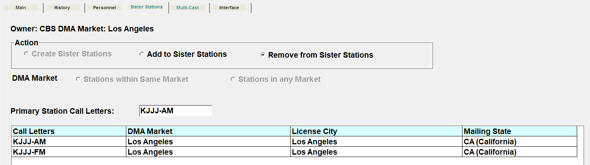
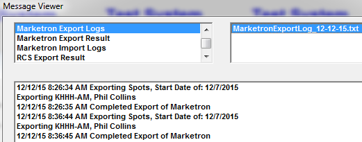

Marketron
Marketron Network Connect offers a seamless, hands-off exchange of spot information between the Network and Marketron Stations.
Setup
XML.INI
The XML.INI file stores the client’s important data. This is the same ini file used for the X-Digital interface. The ini file should be stored in the csi\prod\data folder.
The XML.INI has multiple headers; the one we are concerned with for this set up is [Marketron].
An example XML.INI file can be found in the CSI\Prod\SetUp\Sample INIs folder. The path for the database comes from the client, Counterpoint will acquire the Username and password from Marketron, and enter that information into the XML.INI.
Example XML.INI
[Marketron]
Host = Test
Port = 80
WebServiceURL = /mx/orders/2.0/ProcessOrderNetwork.asmx
XMLVersion = 1.0
XMLEncoding = utf-8
DomainNameURL = http://www.Marketron.com/webservices/MX/Orders/ProcessOrderNetwork/ProcessOrder
SoapEnvolope = xmlns:soap="http://schemas.xmlsoap.org/soap/envelope/" xmlns:xsi="http://www.w3.org/2001/XMLSchema-instance" xmlns:xsd="http://www.w3.org/2001/XMLSchema"
SoapBody = soap:Body><ProcessOrder xmlns="http://www.Marketron.com/webservices"><ProcessOrderNetworkRequest xmlns="http://www.Marketron.com/schemas/"><AuthenticationToken><Username>Counterpoint</Username><Password>CPPass</Password></AuthenticationToken><Payload><NetworkOrder xmlns="http://www.Marketron.com/schemas/networkorder"
; The following information is for requesting information from the server.
WebServiceRcvURL = /mx/orders/2.0/NetworkOrderServices.asmx
SOAPAction_1 = http://www.Marketron.com/webservices/MX/Orders/NetworkOrderServices/GetNetworkOrderList
SOAPAction_2a = <?xml version="1.0" encoding="utf-8"?><soap:Envelope xmlns:soap="http://schemas.xmlsoap.org/soap/envelope/" xmlns:xsi="http://www.w3.org/2001/XMLSchema-instance" xmlns:xsd="http://www.w3.org/2001/XMLSchema"><soap:Body><GetNetworkOrderList xmlns="http://www.Marketron.com/webservices"><GetNetworkOrderListRequest xmlns="http://www.Marketron.com/schemas/">
SOAPAction_2b = <Stations xsi:nil="true" /><Orders xsi:nil="true" /><OrderStartDate xsi:nil="true" /><OrderEndDate xsi:nil="true" /><OrderStates xsi:nil="true" /><AffidavitStates><AffidavitState>
SOAPAction_3 = </AffidavitState></AffidavitStates></GetNetworkOrderListRequest></GetNetworkOrderList></soap:Body></soap:Envelope>
SOAPAction_4 = <?xml version="1.0" encoding="utf-8"?><soap:Envelope xmlns:soap="http://schemas.xmlsoap.org/soap/envelope/" xmlns:xsi="http://www.w3.org/2001/XMLSchema-instance" xmlns:xsd="http://www.w3.org/2001/XMLSchema"><soap:Body><GetNetworkOrderAffidavit xmlns="http://www.Marketron.com/webservices"><GetNetworkOrderAffidavitRequest xmlns="http://www.Marketron.com/schemas/">
SOAPAction_5 = http://www.Marketron.com/webservices/MX/Orders/NetworkOrderServices/GetNetworkOrderAffidavit
Authentication = <AuthenticationToken><Username>Counterpoint</Username><Password>CPPass</Password></AuthenticationToken>
OrderStatus = Available
“Available” is the proper setting. When testing, the setting is changed to “Received”. This imports all possible import files, whereas “Available” only imports those files that have not yet been imported.
LogFile = G:\prod\data\Messages\MarketronDebugLog.txt
Change this value to match with each installs folder configuration.
The log file will have the generation date appended to its name.
ClearLog = N (This prevents the debug log from being overwritten)
The path for the database comes from the client, Counterpoint will acquire the Username and password from Marketron, and enter that information into the XML.INI.
If any of the necessary INI fields are not field in, i.e., Host or Authentication, the user will receive an error message stating “XML.INI has not values for Marketron, or values cannot be read. This form cannot be activated” when attempting to generate the export.
Affiliate Agreement -> Delivery
Affiliates that will be receiving their spot information through Network Connect must be defined as using Network Connect by Marketron on the Affiliate Agreement screen, Delivery tab, Log Delivery Service section.
When Marketron is not configured as a web vendor (in other words, the Vendor Connection info is not filled out on the Vendor Setup screen, and the Marketron export/import is run from the Affiliate system), then these affiliates will only see web logs on the Counterpoint Affidavit system, but not the web affidavit, as the airing information will be imported to the affiliate system directly from Marketron. However, if Marketron is configured as a web vendor, with the corresponding Vendor Connection info filled out on the Vendor Setup screen, then the airing information will be imported from Marketron to the Counterpoint Affidavit system, and in that case, the web affidavit will be shown on the web (in addition to the web log).
Affiliate: Stations Sister Stations/Multicast Stations
For Multicast stations using Network Connect, as long as the stations are set up as multicast agreements, only one station needs to return aired information. The imported aired information will update all multicast stations.
To set up the primary station that will be used, in the Stations screen -> Sister Stations tab, create the Sister Station grouping and define the primary station.

In the Agreements -> Pledge Screen, each agreement must be defined as Multicast. The multicast stations will be highlighted in gray, as shown in the example below.
Once set up correctly, only the primary station will receive the spot log information and submit the posted affidavits, as that is the station that exists in Marketron. The multicast stations can view that file to obtain their spot information if needed, but they do not need to do anything with the affidavits. Once imported into Counterpoint, all stations that are multicast with the primary station will be updated based on the primary station’s affidavit.
Contract Entry
If your network is Tracking Marketron Compliance by Advertiser, there are rules that must be followed when entering contracts, since the definition of compliance is that a spot aired inside the time range specified on the order, and inside the date range specified on the order, not that of the pledge.
- No dayparts may be defined with split times. In other words, they can’t define M-F 6a-7p as both 6a-10a MF and 3p-7p MF, it must be Monday-Friday 6a-7p on one line.
- No order may contain a schedule line with split days. In other words, 6a-10a M-W-Th cannot be put on one line It must be entered as 3 schedule lines: M 6a-10a, W 6a-10a, and F 6a-10a.
- Override times will replace the daypart times when compliance is considered. In other words, a spot booked to 6a-10a with an override of 7a-8a will be non-compliant if it airs at 805a.
- If preferred times are used, they will have no effect on compliance.
These rules only apply if you are Tracking Marketron Compliance by Advertiser, otherwise, compliance is based on spots airing within pledged days and times.
Running the Marketron Export
If Marketron is not used as a Web Vendor, then the Marketron Export (and Import) is run from the Affiliate system. To run the export, select ‘Marketron’ from the ‘Export’ Option under the menu item ‘File’ to bring up the export screen.
- Export Start Date: This date is always a Monday date of the current or future week. An entire week’s worth of spots will be sent
- Send to Marketron: Generally, you will want “Send to Marketron” checked and the “Generate File” unchecked. This will send the spot information directly to Marketron
- Generate File: is used to create two files
- A backup xml file of the data that is sent to Marketron in case something is wrong with the server. The file(s) created is (are) stored in the CSI\Prod\Exports folder. It will create a file for each Vehicle/Station selected. The title of the file will be the Vehicle, the Station, and the Export start date, i.e. Billy Crystal-KRMSAM20251220
- A Marketron fact file, MarketronExportFacts_15-12-20.txt, which lists the station, vehicle, advertiser, isci, start date, start time, ast code
- Sample Output
- STATION KDDD-FM
- VEHICLE George Carlin
- AT&T FDCT 1233 12/20/99 18:20:00 astcode: 3428
- Mastercard MCXM 08 09 12/20/99 18:30:00 astcode: 3341
- General Motors GMPT 54 12 12/20/99 18:40:00 astcode: 3343
- Radio Shack RSCL 09 12 12/20/99 18:40:00 astcode: 334
- The user can select which vehicles and stations to export, or can export all of them at once.
- When the information is filled in, click the Export button
Example Export
This is an example of what gets sent:
<OrderID>George Carlin\KHHHFM\19991220</OrderID>
- This line contains the Vehicle, call letters, and Monday Date (YYYYMMDD) being sent
<NetworkName>XYZ Broadcasting</NetworkName>
- This line contains the Network Name as entered in Site Options
<NetworkSoftware>Counterpoint</NetworkSoftware>
- This line let’s Marketron know that it is importing information from Counterpoint
<ProgramName>George Carlin</ProgramName>
- This is the Vehicle name being imported
<CallLetters>KHHH</CallLetters>
- This line lists the call letters to receive the export
<Band>FM</Band>
- Band of the station
<StartDate>1999-12-20</StartDate>
- This is the Monday date of the week being exported, YYYY-MM-DD.
<EndDate>1999-12-26</EndDate>
- This is Sunday date of the week being exported, YYYY-MM-DD.
<SpotList>
- This indicates the beginning of the Spot information
<Spot>
- This lets Marketron know that all lines between <Spot> and <Spot> pertain to one spot
<SpotID>3590</SpotID>
- This is a unique spot ID sent from Counterpoint that is used for reconciliation
<Advertiser>Radio Shack</Advertiser>
- Advertiser from Traffic
<ProductName>Cellular</ProductName>
- Product from Traffic
<ProductCode>Auto Parts</ProductCode>
- Product Protection from Traffic
<StartDate>1999-12-20</StartDate>
- Start Date of the Spot to air based on the way compliance is being determined
<EndDate>1999-12-20</EndDate>
- End Date of the Spot to air based on the way compliance is being determined
<StartTime>18:20:00</StartTime>
- Start time of the Spot to air based on the log
<EndTime>18:20:00</EndTime>
- Start time of the Spot to air based on the log
<Length>30</Length>
- Spot Length based on the contract
<ISCICode>RSTV 30 12</ISCICode>
- ISCI code coming from Traffic
<CopyTitle>Holiday TV's</CopyTitle>
- Creative title coming from Traffic
<CopyComment>Please air Radio Shack spots in 1st position.</CopyComment>
- Copy comment coming from Traffic
<CopyEndDate>2000-01-02</CopyEndDate>
- Last valid date to air copy coming from Traffic rotation
</Spot>
Followed by more spots for the week for vehicle/station.
Export Results
Counterpoint exports directly to Marketron. A log is created in the CSI\Prod\Data\Messages folder that is a ‘backup’ of the export, rather than the actual export itself. This log file will be appended to (if the vehicle, station, date, etc., is the same as an existing file) every time the export is generated. The file is titled MarketronExportLog_MM-DD-YYYY.TXT.
You can view the contents through the Affiliate Messages Viewer, by click Accessories -> Viewer (upper left hand corner), and selecting Marketron Exports Logs and the date.

Warning Messages
Any warning messages that occur during the export, but do not impede the export, or any stations included in the export that do not exist in the Marketron system, will be displayed in the results box, and stored in the Marketron Export Log. You can view the Marketron Export Log in the Messages Viewer.
Error Messages
Any errors that occur during the export will be recorded in the XMLErrorResponse.txt. The TXT file will be stored in the Log File folder as defined in the XML.INI, and can be viewed in the Messages Viewer.